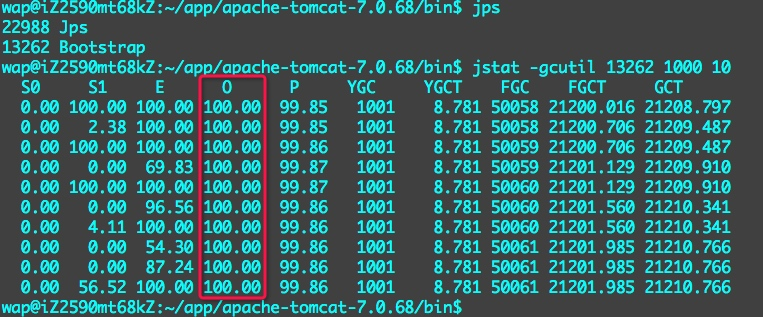
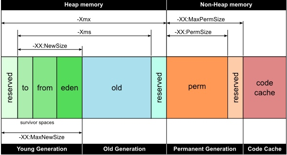

JVM
JVM内存配置
异常的FullGC引发的故障
系统中的portal模块近期频繁出现cpu使用率达到100%的情况，使用top命令查看，发现确实是java业务进程占用异常，重启后可以恢复正常，但一到两天后再次出现。
通过jstat命令查看GC情况时发现是因为老生代被占满，导致进程一直在进行FullGC，且FullGC后老生代仍然使用率为100%，现象如下：

出现这种情况一般有两个可能：
- 内存溢出。
- 老生代容量太小，确实有数据存不下。
由于重启后可以保持一段时间正常，且老生代增长并不是特别快，故排除可能内存溢出的可能性，我们准备通过调整jvm内存来修复。
调整虚拟机内存大小
在使用容器时可以调整它的分配内存大小以获取更强的性能，具体操作方法是修改 bin/catalina.sh 文件中的 JAVA_OPTS 配置。
具体如下
#JAVA_OPTS="$JAVA_OPTS -Dorg.apache.catalina.security.SecurityListener.UMASK=`umask`"
JAVA_OPTS="-Xms512m -Xmx1536m -XX:PermSize=256m -XX:MaxPermSize=512m -Xmn512m"
修改文件前请务必备份
各字段含义如下
- -Xms 初始内存容量
- -Xmx 最大内存容量
- -XX:PermSize 老生代初始容量
- -XX:MaxPermSize 老生代最大容量
- -Xmn 新生代容量
修改后内容为：
JAVA_OPTS="-Xms1536m -Xmx1536m -XX:PermSize=256m -XX:MaxPermSize=512m -Xmn512m"
正常FullGC记录
下面是一次正常的FullGC记录，Old区从99.91%回收至56.53%, FullGC时间为435ms, YangGC平均时间为15ms
S0 S1 E O P YGC YGCT FGC FGCT GCT
0.00 9.62 9.90 99.91 29.16 443 6.892 0 0.000 6.892
0.00 9.62 13.23 99.91 29.16 443 6.892 0 0.000 6.892
0.00 9.62 14.02 99.91 29.16 443 6.892 0 0.000 6.892
0.00 9.62 36.24 99.91 29.16 443 6.892 0 0.000 6.892
0.00 9.62 50.07 99.91 29.16 443 6.892 0 0.000 6.892
0.00 9.62 51.67 99.91 29.16 443 6.892 0 0.000 6.892
0.00 9.62 51.79 99.91 29.16 443 6.892 0 0.000 6.892
0.00 9.62 77.47 99.91 29.16 443 6.892 0 0.000 6.892
8.14 0.00 0.00 99.96 29.16 444 6.906 1 0.000 6.906
0.00 0.00 10.75 56.53 29.16 444 6.906 1 0.435 7.341
0.00 0.00 13.19 56.53 29.16 444 6.906 1 0.435 7.341
0.00 0.00 16.94 56.53 29.16 444 6.906 1 0.435 7.341
深入学习虚拟机内存分区
虚拟机内存分区说明
分区情况如下图所示

其中：
- Young Generation 存储最新的对象
- Old Generation 存储老对象，经过多次回收都释放不掉的数据（官方叫法是tenured generation）
- Permanent Generation 存储虚拟机需要用到的class数据
- Code Cache 存储代码信息
查看当前各区占用内存的大小
使用jmap命令可以查看虚拟机中的各区内存使用量。具体方法是：
wap@iZ2590mt68kZ:~/app/jdk1.7.0_79/bin$ jmap -heap 32429
32429 是进程的pid
jmap 在java_home/bin目录下
运行结果如下：
wap@iZ2590mt68kZ:~/app/jdk1.7.0_79/bin$ jmap -heap 32429
Attaching to process ID 32429, please wait...
Debugger attached successfully.
Server compiler detected.
JVM version is 24.79-b02
using thread-local object allocation.
Mark Sweep Compact GC
Heap Configuration:
MinHeapFreeRatio = 40
MaxHeapFreeRatio = 70
MaxHeapSize = 1610612736 (1536.0MB)
NewSize = 1310720 (1.25MB)
MaxNewSize = 17592186044415 MB
OldSize = 5439488 (5.1875MB)
NewRatio = 2
SurvivorRatio = 8
PermSize = 268435456 (256.0MB)
MaxPermSize = 536870912 (512.0MB)
G1HeapRegionSize = 0 (0.0MB)
Heap Usage:
New Generation (Eden + 1 Survivor Space):
capacity = 161153024 (153.6875MB)
used = 29450688 (28.08636474609375MB)
free = 131702336 (125.60113525390625MB)
18.274983161346075% used
Eden Space:
capacity = 143261696 (136.625MB)
used = 28062800 (26.762771606445312MB)
free = 115198896 (109.86222839355469MB)
19.58848790956656% used
From Space:
capacity = 17891328 (17.0625MB)
used = 1387888 (1.3235931396484375MB)
free = 16503440 (15.738906860351562MB)
7.757322430173993% used
To Space:
capacity = 17891328 (17.0625MB)
used = 0 (0.0MB)
free = 17891328 (17.0625MB)
0.0% used
tenured generation:
capacity = 357957632 (341.375MB)
used = 211810616 (201.99834442138672MB)
free = 146147016 (139.37665557861328MB)
59.17197932519567% used
Perm Generation:
capacity = 268435456 (256.0MB)
used = 78553416 (74.91437530517578MB)
free = 189882040 (181.08562469482422MB)
29.26342785358429% used
24959 interned Strings occupying 3043064 bytes.
这份数据详细展示了当前各区的配置大小和使用率，可以根据它来调整我们的配置。比如：
从结果可以看到我们Perm Generate才使用29%，而class相关的数据应该是比较稳定，所以在分配上存在一定的浪费。我们可以优化配置，让出更多的内存给业务侧。
优化后，配置为:
JAVA_OPTS="-Xms1536m -Xmx1536m -XX:NewSize=128m -XX:MaxNewSize=768m -XX:PermSize=128m -XX:MaxPermSize=128m"我在使用jmap时出现了
Can't attach to the process错误，经过查证，可以通过修改系统配置的方式解决，具体方法参见参考链接：jmap报can not attach to the process 问题处理。
后期优化记录
由于我们系统内存只有2G，加上一些其它应用占用的内存，采用上述配置会出现内存被占满的情况，经过计算，将系统内存调整为：
JAVA_OPTS="-Xms1024m -Xmx1024m -XX:NewSize=128m -XX:MaxNewSize=768m -XX:PermSize=128m -XX:MaxPermSize=128m "